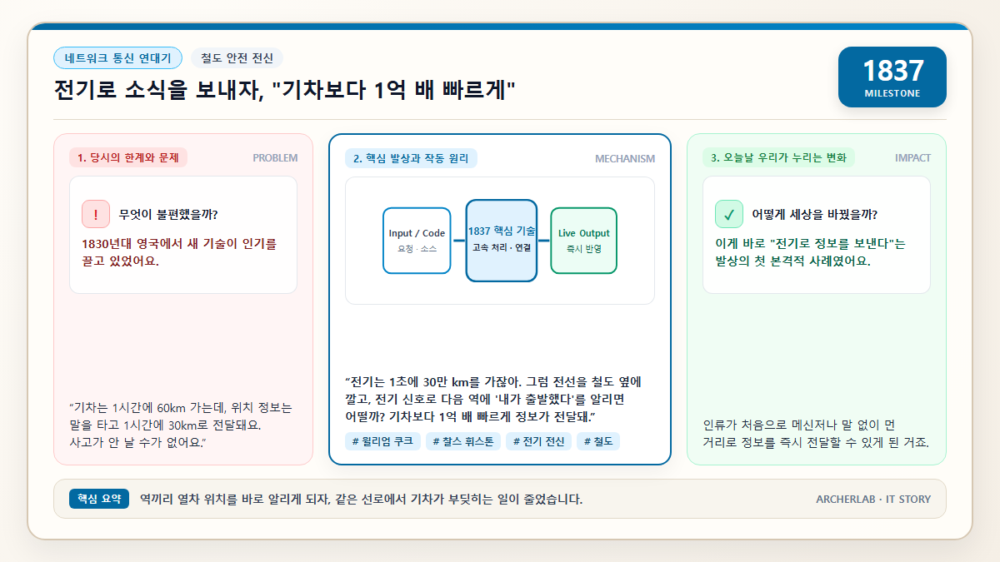

1837
Sending news as electricity, “a hundred million times faster than the train itself”
“Our trains do 60 km/h but our news moves by horse at 30.” To prevent collisions, Britain ran wires along the track — and the signal reached the next station, 13 miles away, instantly. This is WhatsApp’s oldest ancestor.

In 1830s Britain, a new technology was taking off: the railway. Trains could move people and cargo at unprecedented speed, but they had a deadly problem — collisions between trains on the same track were common. Nobody at one station had any way to know where a train actually was. The only "signaling" was a rider on horseback galloping to the next station. Which was, obviously, slower than the train. A railway manager sighed, "Our trains move at 60 km/h, but news about them moves by horse at 30. Of course there are accidents."
Two British inventors, William Cooke and Charles Wheatstone, had an outrageous idea. "Electricity travels at 300,000 kilometers per second. Lay a wire beside the track, and we can tell the next station 'I'm coming' a hundred million times faster than the train itself."
In 1837 they installed the first electric telegraph along Britain's Great Western Railway. Press a button at one station, and a needle twitched at the next. A stationmaster cheered after the first use, "I pressed the key here and they got it thirteen miles away — instantly! No more train collisions!" The telegraph spread across Britain's railway network, and train operations became dramatically safer almost overnight.
This was the first real demonstration of "sending information as electricity." For the first time, humans could push a message across distance without a messenger or a horse. Every WhatsApp message you send today that lands in someone's hand in 0.1 seconds is a direct descendant of that 1837 railway hack. The single most important pivot in communication history began as a fix for trains crashing into each other.
A simple idea—let current pull a magnetic needle to the same scale in both stations—turned train control from guesswork into record keeping. Dispatchers could warn colleagues about delays, prevent rear-end collisions, and schedule crossings with confidence. Telegraphy quickly became as essential to railways as the tracks themselves.